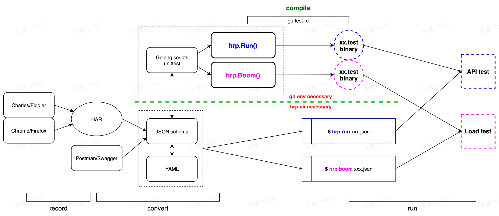

hrp (HttpRunner+)¶


hrp is a golang implementation of HttpRunner. Ideally, hrp will be fully compatible with HttpRunner, including testcase format and usage. What's more, hrp will integrate Boomer natively to be a better load generator for locust.
Key Features¶

- Full support for HTTP(S) requests, more protocols are also in the plan.
- Testcases can be described in multiple formats,
YAML/JSON/Golang, and they are interchangeable. - With
HARsupport, you can use Charles/Fiddler/Chrome/etc as a script recording generator. - Supports
variables/extract/validate/hooksmechanisms to create extremely complex test scenarios. - Built-in integration of rich functions, and you can also use
go pluginto create and call custom functions. - Inherit all powerful features of
Boomerandlocust, you can runload testwithout extra work. - Use it as a
CLI toolor as alibraryare both supported.
Quick Start¶
use as CLI tool¶
$ go get -u github.com/httprunner/hrp/hrp
Since installed, you will get a hrp command with multiple sub-commands.
$ hrp -h
hrp (HttpRunner+) is the next generation for HttpRunner. Enjoy! ✨ 🚀 ✨
License: Apache-2.0
Github: https://github.com/httprunner/hrp
Copyright 2021 debugtalk
Usage:
hrp [command]
Available Commands:
boom run load test with boomer
completion generate the autocompletion script for the specified shell
har2case Convert HAR to json/yaml testcase files
help Help about any command
run run API test
Flags:
-h, --help help for hrp
--log-json set log to json format
-l, --log-level string set log level (default "INFO")
-v, --version version for hrp
Use "hrp [command] --help" for more information about a command.
You can use hrp run command to run HttpRunner JSON/YAML testcases. The following is an example running examples/demo.json
$ hrp run examples/demo.json
8:04PM INF Set log to pretty console
8:04PM INF Set log level to INFO
8:04PM INF [init] SetDebug debug=true
8:04PM INF load json testcase path=/Users/debugtalk/MyProjects/HttpRunner-dev/hrp/examples/demo.json
8:04PM INF call function success arguments=[5] funcName=gen_random_string output=B64R8
8:04PM INF call function success arguments=[12.3,3.45] funcName=max output=12.3
8:04PM INF run testcase start testcase="demo with complex mechanisms"
8:04PM INF call function success arguments=[12.3,34.5] funcName=max output=34.5
8:04PM INF run step start step="get with params"
-------------------- request --------------------
GET /get?foo1=B64R8&foo2=34.5 HTTP/1.1
Host: postman-echo.com
User-Agent: HttpRunnerPlus
==================== response ===================
HTTP/1.1 200 OK
Content-Length: 304
Connection: keep-alive
Content-Type: application/json; charset=utf-8
Date: Thu, 11 Nov 2021 12:04:32 GMT
Etag: W/"130-LUQ0LVU7KVSZha0O3nQxqPlr5dw"
Set-Cookie: sails.sid=s%3Ag6vZXrHHzs-B7Q1bFrYQq83dUje_EkSu.06vsqbkZvIOJ6mb1It7c6i354e%2B0t91K4cG14YFjSX0; Path=/; HttpOnly
Vary: Accept-Encoding
{"args":{"foo1":"B64R8","foo2":"34.5"},"headers":{"x-forwarded-proto":"https","x-forwarded-port":"443","host":"postman-echo.com","x-amzn-trace-id":"Root=1-618d06d0-7516144f65e561a8238adab5","user-agent":"HttpRunnerPlus","accept-encoding":"gzip"},"url":"https://postman-echo.com/get?foo1=B64R8&foo2=34.5"}
--------------------------------------------------
8:04PM INF extract value from=body.args.foo1 value=B64R8
8:04PM INF set variable value=B64R8 variable=varFoo1
8:04PM INF validate status_code assertMethod=equals checkValue=200 expectValue=200 result=true
8:04PM INF validate headers."Content-Type" assertMethod=startswith checkValue="application/json; charset=utf-8" expectValue=application/json result=true
8:04PM INF validate body.args.foo1 assertMethod=length_equals checkValue=B64R8 expectValue=5 result=true
8:04PM INF validate $varFoo1 assertMethod=length_equals checkValue=B64R8 expectValue=5 result=true
8:04PM INF validate body.args.foo2 assertMethod=equals checkValue=34.5 expectValue=34.5 result=true
8:04PM INF run step end exportVars={"varFoo1":"B64R8"} step="get with params" success=true
8:04PM INF run step start step="post json data"
8:04PM INF call function success arguments=[12.3,3.45] funcName=max output=12.3
-------------------- request --------------------
POST /post HTTP/1.1
Host: postman-echo.com
Content-Type: application/json; charset=UTF-8
{"foo1":"B64R8","foo2":12.3}
==================== response ===================
HTTP/1.1 200 OK
Content-Length: 424
Connection: keep-alive
Content-Type: application/json; charset=utf-8
Date: Thu, 11 Nov 2021 12:04:32 GMT
Etag: W/"1a8-1umvYElau4WkHR7VON+jKXozT2c"
Set-Cookie: sails.sid=s%3AeNnS5IE6TBePzx95OfuwyIweJy5aExb0.7MH6Vb42vbZ6OhNT2nhQGcAmHgqcFmtM8X03Qsoxa1k; Path=/; HttpOnly
Vary: Accept-Encoding
{"args":{},"data":{"foo1":"B64R8","foo2":12.3},"files":{},"form":{},"headers":{"x-forwarded-proto":"https","x-forwarded-port":"443","host":"postman-echo.com","x-amzn-trace-id":"Root=1-618d06d0-360475ad34903a97191978d7","content-length":"28","user-agent":"Go-http-client/1.1","content-type":"application/json; charset=UTF-8","accept-encoding":"gzip"},"json":{"foo1":"B64R8","foo2":12.3},"url":"https://postman-echo.com/post"}
--------------------------------------------------
8:04PM INF validate status_code assertMethod=equals checkValue=200 expectValue=200 result=true
8:04PM INF validate body.json.foo1 assertMethod=length_equals checkValue=B64R8 expectValue=5 result=true
8:04PM INF validate body.json.foo2 assertMethod=equals checkValue=12.3 expectValue=12.3 result=true
8:04PM INF run step end exportVars=null step="post json data" success=true
8:04PM INF run step start step="post form data"
8:04PM INF call function success arguments=[12.3,3.45] funcName=max output=12.3
-------------------- request --------------------
POST /post HTTP/1.1
Host: postman-echo.com
Content-Type: application/x-www-form-urlencoded; charset=UTF-8
foo1=B64R8&foo2=12.3
==================== response ===================
HTTP/1.1 200 OK
Content-Length: 445
Connection: keep-alive
Content-Type: application/json; charset=utf-8
Date: Thu, 11 Nov 2021 12:04:32 GMT
Etag: W/"1bd-g/z+op+J2/U1DlrEv2g2VhZ0on4"
Set-Cookie: sails.sid=s%3ALfq9XEgKVT4dKQ8PnxUJ9-WSq4wI96Po.2P90TP9V2Pje3GNJ1hJmLcRRgcQy%2FDwBPF63Xdvdq4o; Path=/; HttpOnly
Vary: Accept-Encoding
{"args":{},"data":"","files":{},"form":{"foo1":"B64R8","foo2":"12.3"},"headers":{"x-forwarded-proto":"https","x-forwarded-port":"443","host":"postman-echo.com","x-amzn-trace-id":"Root=1-618d06d0-56d250242bf05b7144edf2cb","content-length":"20","user-agent":"Go-http-client/1.1","content-type":"application/x-www-form-urlencoded; charset=UTF-8","accept-encoding":"gzip"},"json":{"foo1":"B64R8","foo2":"12.3"},"url":"https://postman-echo.com/post"}
--------------------------------------------------
8:04PM INF validate status_code assertMethod=equals checkValue=200 expectValue=200 result=true
8:04PM INF validate body.form.foo1 assertMethod=length_equals checkValue=B64R8 expectValue=5 result=true
8:04PM INF validate body.form.foo2 assertMethod=equals checkValue=12.3 expectValue=12.3 result=true
8:04PM INF run step end exportVars=null step="post form data" success=true
8:04PM INF run testcase end testcase="demo with complex mechanisms"
use as library¶
Beside using hrp as a CLI tool, you can also use it as golang library.
$ go get -u github.com/httprunner/hrp
This is an example of HttpRunner+ testcase. You can find more in the examples directory.
demo
import (
"testing"
"github.com/httprunner/hrp"
)
func TestCaseDemo(t *testing.T) {
testcase := &hrp.TestCase{
Config: hrp.TConfig{
Name: "demo with complex mechanisms",
BaseURL: "https://postman-echo.com",
Variables: map[string]interface{}{ // global level variables
"n": 5,
"a": 12.3,
"b": 3.45,
"varFoo1": "${gen_random_string($n)}",
"varFoo2": "${max($a, $b)}", // 12.3; eval with built-in function
},
},
TestSteps: []hrp.IStep{
hrp.Step("get with params").
WithVariables(map[string]interface{}{ // step level variables
"n": 3, // inherit config level variables if not set in step level, a/varFoo1
"b": 34.5, // override config level variable if existed, n/b/varFoo2
"varFoo2": "${max($a, $b)}", // 34.5; override variable b and eval again
}).
GET("/get").
WithParams(map[string]interface{}{"foo1": "$varFoo1", "foo2": "$varFoo2"}). // request with params
WithHeaders(map[string]string{"User-Agent": "HttpRunnerPlus"}). // request with headers
Extract().
WithJmesPath("body.args.foo1", "varFoo1"). // extract variable with jmespath
Validate().
AssertEqual("status_code", 200, "check response status code"). // validate response status code
AssertStartsWith("headers.\"Content-Type\"", "application/json", ""). // validate response header
AssertLengthEqual("body.args.foo1", 5, "check args foo1"). // validate response body with jmespath
AssertLengthEqual("$varFoo1", 5, "check args foo1"). // assert with extracted variable from current step
AssertEqual("body.args.foo2", "34.5", "check args foo2"), // notice: request params value will be converted to string
hrp.Step("post json data").
POST("/post").
WithBody(map[string]interface{}{
"foo1": "$varFoo1", // reference former extracted variable
"foo2": "${max($a, $b)}", // 12.3; step level variables are independent, variable b is 3.45 here
}).
Validate().
AssertEqual("status_code", 200, "check status code").
AssertLengthEqual("body.json.foo1", 5, "check args foo1").
AssertEqual("body.json.foo2", 12.3, "check args foo2"),
hrp.Step("post form data").
POST("/post").
WithHeaders(map[string]string{"Content-Type": "application/x-www-form-urlencoded; charset=UTF-8"}).
WithBody(map[string]interface{}{
"foo1": "$varFoo1", // reference former extracted variable
"foo2": "${max($a, $b)}", // 12.3; step level variables are independent, variable b is 3.45 here
}).
Validate().
AssertEqual("status_code", 200, "check status code").
AssertLengthEqual("body.form.foo1", 5, "check args foo1").
AssertEqual("body.form.foo2", "12.3", "check args foo2"), // form data will be converted to string
},
}
err := hrp.NewRunner(nil).Run(demoTestCase) // hrp.Run(demoTestCase)
if err != nil {
t.Fatalf("run testcase error: %v", err)
}
}
Sponsors¶
Thank you to all our sponsors! ✨🍰✨ (become a sponsor)
Gold Sponsor¶
霍格沃兹测试开发学社是业界领先的测试开发技术高端教育品牌，隶属于测吧（北京）科技有限公司 。学院课程由一线大厂测试经理与资深测试开发专家参与研发，实战驱动。课程涵盖 web/app 自动化测试、接口测试、性能测试、安全测试、持续集成/持续交付/DevOps，测试左移&右移、精准测试、测试平台开发、测试管理等内容，帮助测试工程师实现测试开发技术转型。通过优秀的学社制度（奖学金、内推返学费、行业竞赛等多种方式）来实现学员、学社及用人企业的三方共赢。
Open Source Sponsor¶
Subscribe¶
关注 HttpRunner 的微信公众号，第一时间获得最新资讯。